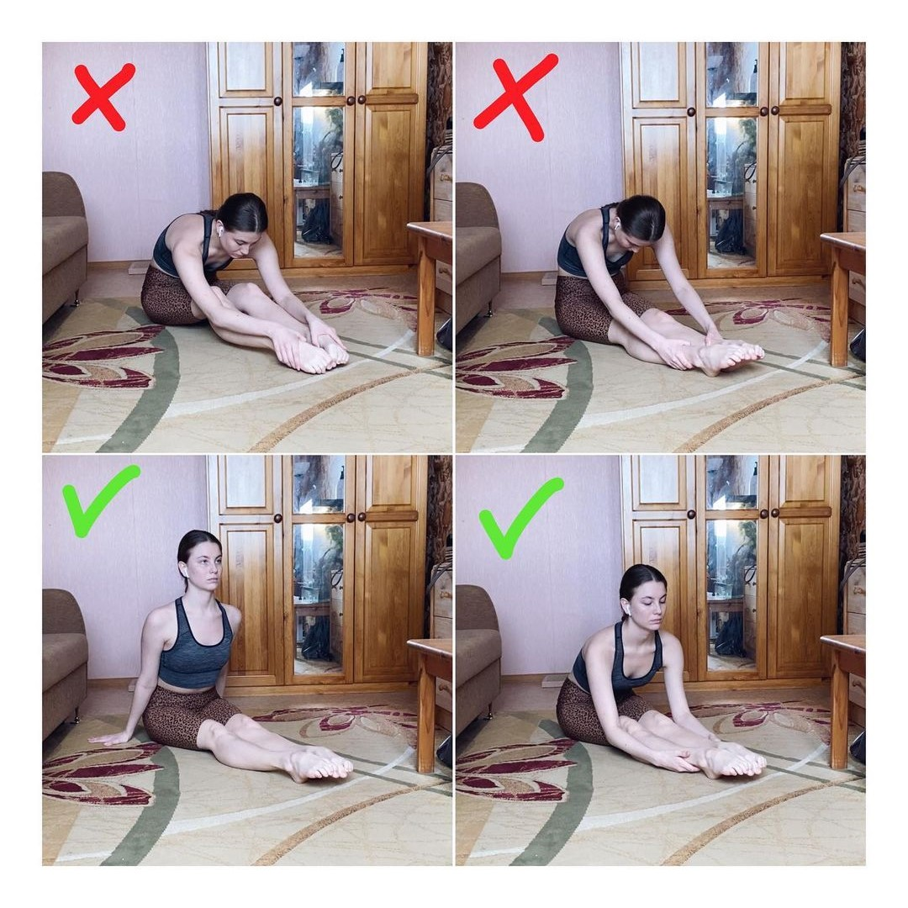
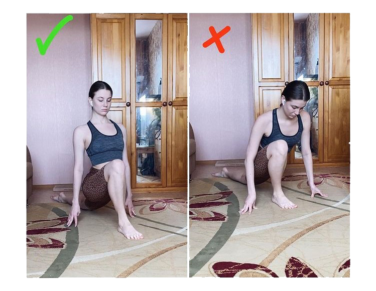
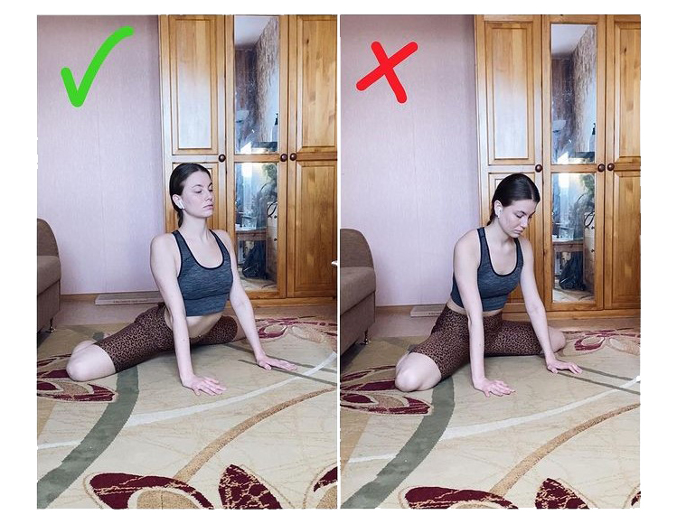
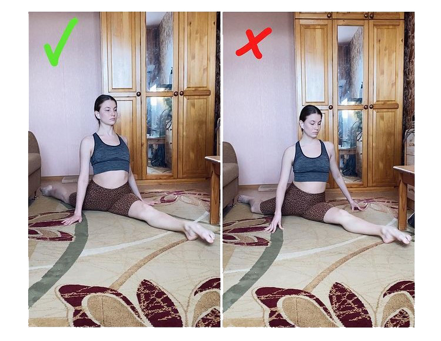

1. Складочка (растяжка подколенных связок и мышц бедра) выполняется таким образом::
- спина прямая
- колени прямые
- плечи не напрягать
- голову сильно не опускать
- грудной клеткой тянуться вперед
Если складочку выполнять трудно, то можно сесть на блок или книгу.

2. Бабочка (растяжка паховых связок и внутренней части бедра):
- спина прямая от поясницы
- голову вниз сильно не опускать
- грудной клеткой тянуться вперед
- мышцы бедер расслаблять и опускать колени к полу
3. Выпад (растяжка передней части бедра) необходимо делать следующим образом:
- спина прямая
- грудная клетка раскрыта
- пятка передней ноги точно под коленом
- пятка задней ноги направлена в потолок
- передней частью заднего бедра тянуться к полу
Для облегчения можно подставить под руки блоки.

4. Лягушка (растяжка внутренней части бедра) выполняется так:
- между коленом, тазом и коленом прямая линия
- не садиться на попу и не вываливать живот вперед
- спину поднимать и давить на таз собственным весом

5. Продольный шпагат нужно выполнять в таком положении:
- передняя нога направлена точно вперед
- спина прямая, плечи стараться направлять чуть назад, раскрывая грудную клетку
- колено и бедро задней ноги направлены точно в пол, а пятка точно в потолок
- пупок максимально развернуть вперед
